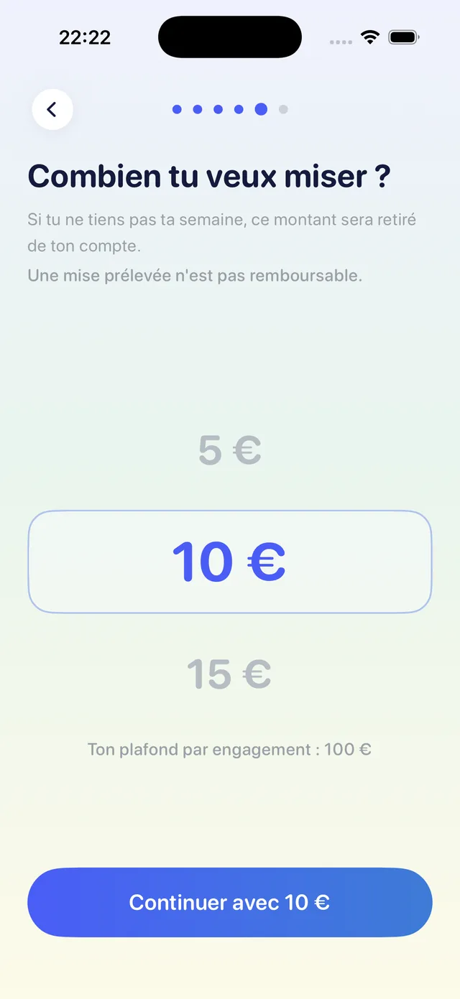
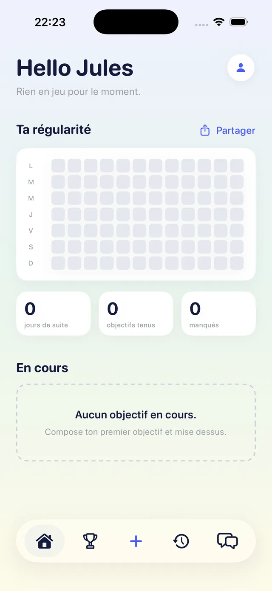
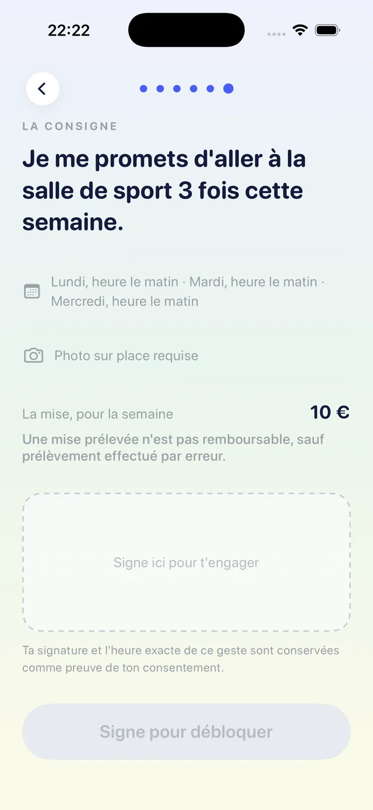

Application iOS · Projet personnel
Lockd
Tiens tes objectifs. Sinon, ta mise part à une bonne cause.
- Règles d'argent dans la base : un trigger Postgres impose la machine à états, même au compte admin.
- Consentements infalsifiables : signatures immuables, chaînées par hash.
- 64 tests sur trois couches : pgTAP, Deno et XCTest.
SwiftUI · Supabase · PostgreSQL · Deno
Voir le site